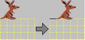
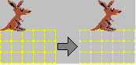
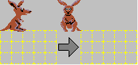

Cangurul executa un PAS, adica se muta o pozitie si deseneaza traseul parcurs.

Cangurul executa un SALT, adica se muta o pozitie fara sa lase urma.

Cangurul executa o ROTIRE cu 90 de grade in sensul acelor de ceasornic.
Executa de n ori blocul dintre REPETA si SFIRSITUL REPETARII.
Defineste o procedura care poate fi apelata mai tarziu cu EXECUTA nume.
EXECUTA nume.
Porneste procedura cu numele dat.
Executa blocul pana la SFIRSITUL CICLULUI atata timp cat conditia ramane adevarata.
Executa instructiunea de dupa ATUNCI daca testul este adevarat, altfel pe cea de dupa ALTFEL.
ATUNCI
ALTFEL
E_MARGINE, NU E_MARGINE, E_LINIE, NU E_LINIE